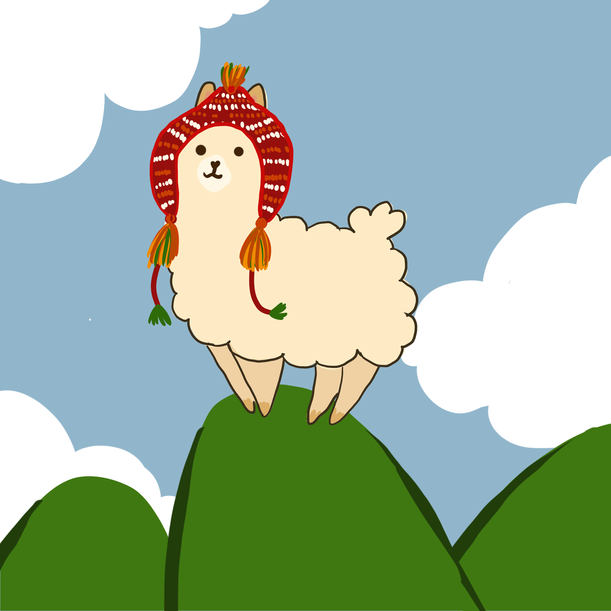
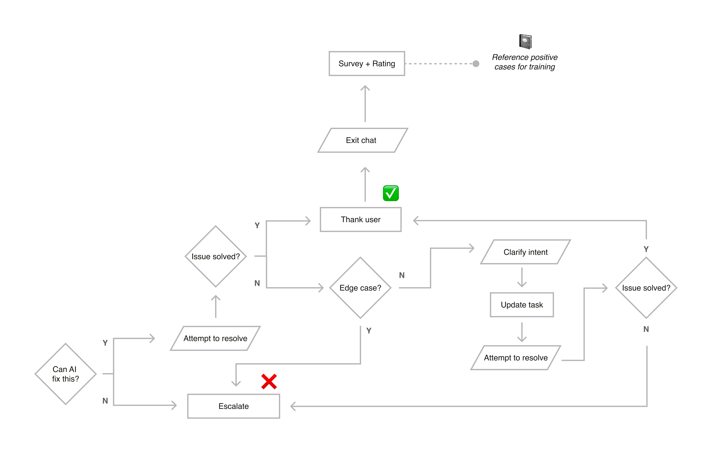
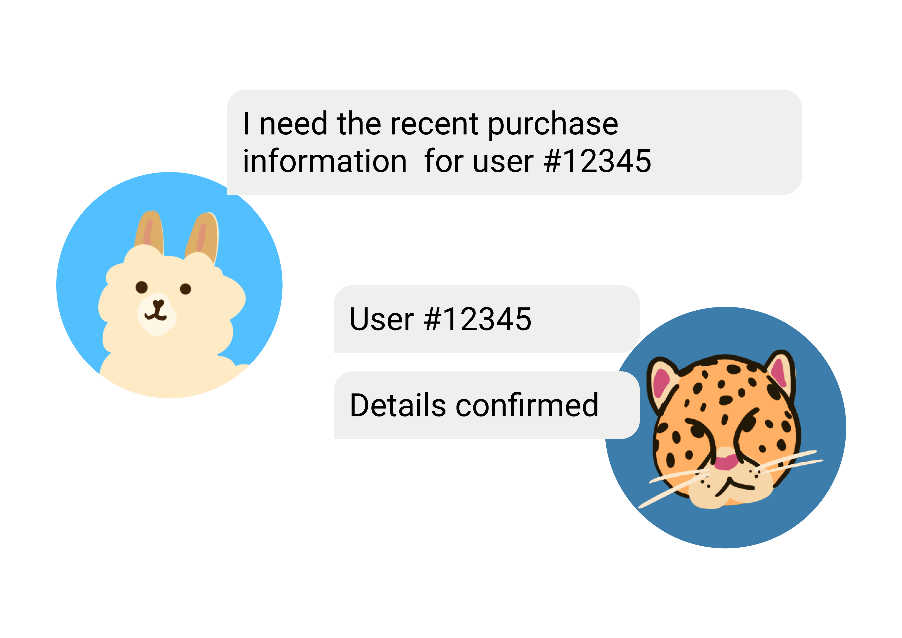
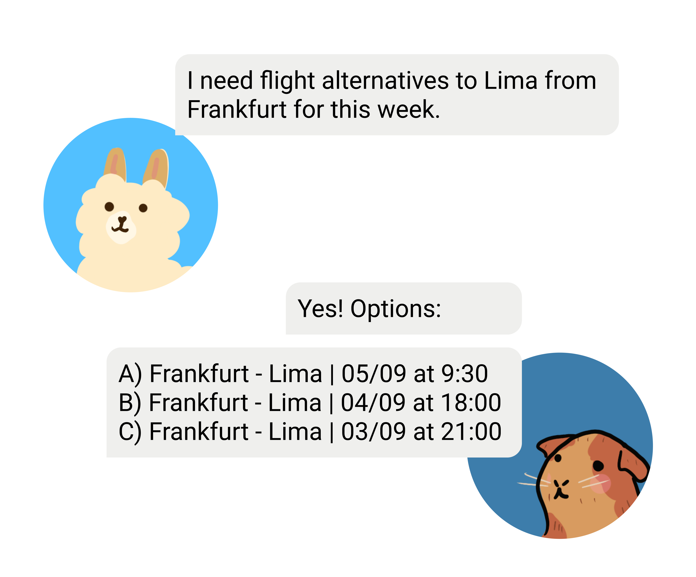
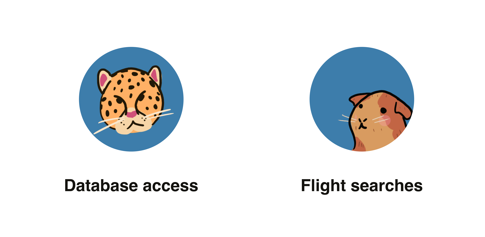
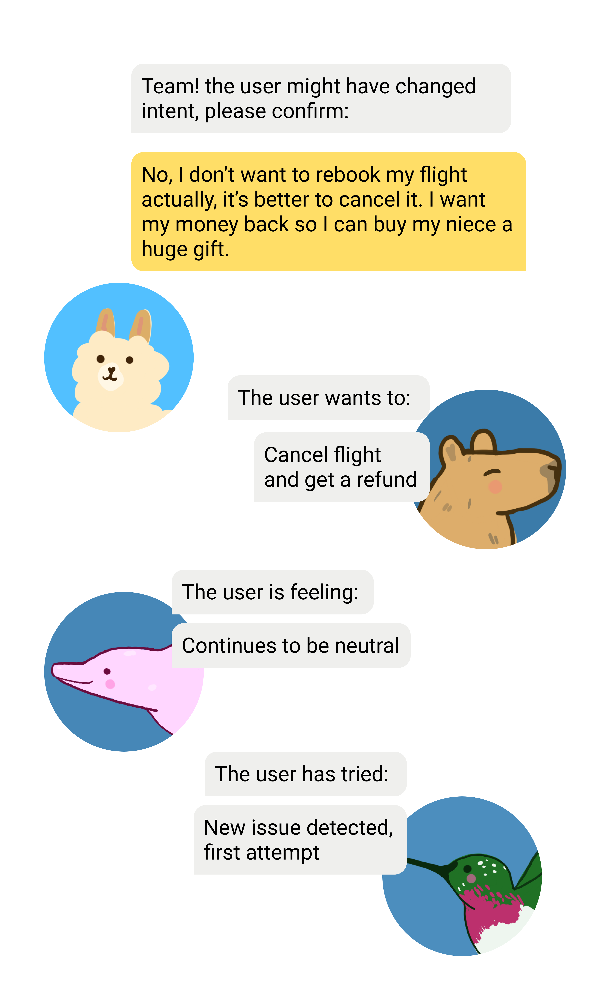
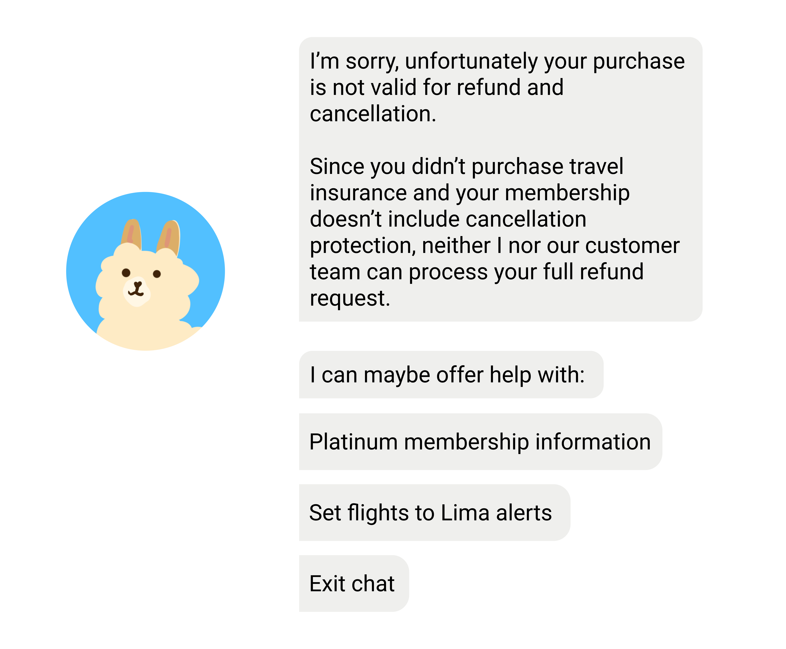
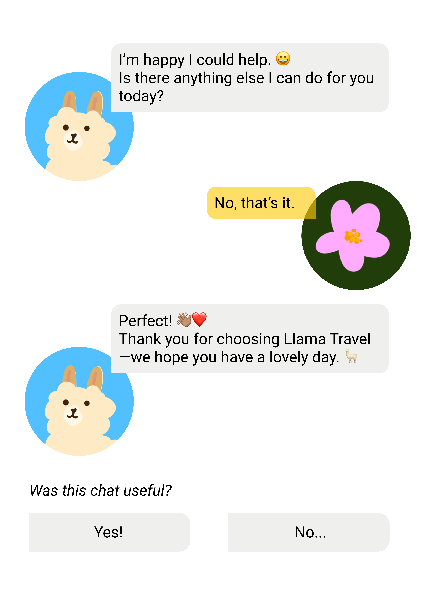
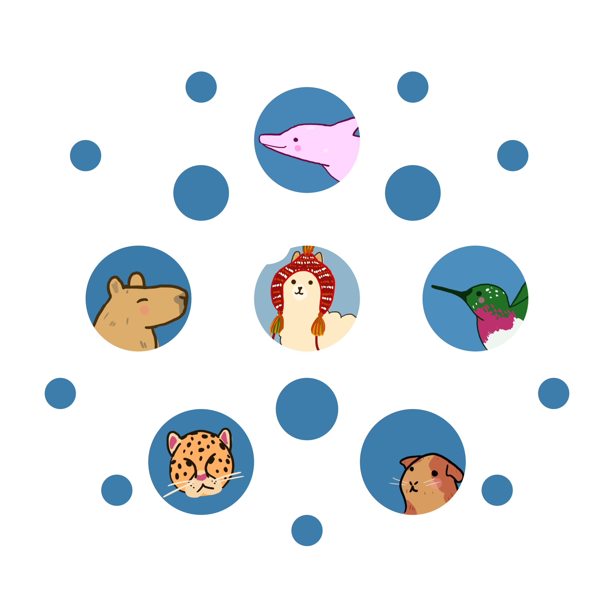

AI • Agents • LLM
September 02
What AI agents can solve and what they shouldn't.
We’re jumping right in, reader. Llama Travel needs us.
We’re back at our travel agency, rolling out their first AI agent for customer support. Previously, we explored how the agent, Llamita AI, would greet new users and assess their needs and urgency, assisted by a few other animal agents.
Now, we’re diving into the next critical steps: handling the task and deciding when to escalate the chat when needed.
Grab your passport and pack your suitcase—and if you need a quick refresher on LLMs or AI agent basics, check out my earlier posts: Llama Travel 1, LLM Champion, and LLM Master.
Ready for takeoff?

Today Llamita is wearing a traditional chullo hat :)
In the last step, Llamita assessed the task and the urgency. In our example, the customer wanted to change their flight booking. It was their second attempt, so they might be a bit frustrated, even though their language was neutral.
So, what's next? We need to decide whether Llamita can fix this or not.
First, let's determine what kinds of things an agent can solve. This depends on their training and the tools and databases they have access to. Most AI agents can handle tasks like booking changes, updating customer details, processing refunds, answering FAQs, and accessing real-time data within their connected systems .
But what kinds of things are beyond Llamita's control? Anything related to legal, security, or explicit content. We can explicitly tell Llamita to avoid certain topics. There are situations where we definitely need a human to step in. This makes sure sensitive issues are never overlooked. We'll look at examples in the next blog post.
Now let's focus on scenarios Llamita can solve. We will divide this into 3 sections: 2.1) Initial attempt, 2.2) Clarification attempt, and 2.3) Offboarding.

Here is the whole diagram flow, let's dive in!
The simplest scenario for the AI agent begins once the task and urgency are assessed. The agent must confirm the user's identity, get authorization before making any changes, and confirm once the action is complete.
In our flight rebooking case, Llamita knows it can handle the situation and should avoid escalating, since the situation is not urgent. This was determined with help from other specialized agents. So, what does Llamita do next?
Llamita calls in a specialized database agent—a jaguar—to retrieve details using the user's ID:

Jaguar agent retrieves the user's details.
With all info retrieved, Llamita confirms with the user which flight should be changed, clarifying in case there are multiple bookings or services.
Llamita: Of course, is this the flight you wish to change? Flight: Frankfurt - Lima for September 30 at 9:30 AM
User: Yes, I need to book something for this week, my baby niece was born yesterday and I want to see my family. I need the earliest flight possible.
Llamita: Of course, give me one second to look for flights...
Today is September 3rd, 11:30 AM. Now Llamita calls another agent, a guinea pig, for specialized flight search in the system. By default, the flight search agent is trained to check nearby airports and optimize for fewest connections and minimal price difference, helping keep customer satisfaction high.

Guinea pig agent finds flight alternatives.
Llamita: We have three options for you:
Let me know which one you prefer or if you’d like to view more options from other dates or airports.
No changes are made without user authorization, and we always offer to keep searching in case the first results aren't quite right.
User: Good, I like option B since I need to pack. What is the price difference?
Llamita: Since you paid for travel
insurance and are a platinum member, there is no
fee for your flight change. If you accept,
please click 'confirm flight change' below:
Confirm flight change
Continue looking for flights
Ideally, the user confirms, successful teamwork from Llamita and the agent team!

Two new agents join the team!
But what if Llamita’s process was not what the user intended? Sometimes, an AI agent might misinterpret the user's request, or the user might not clearly state what they want. For example, asking to cancel the trip and get a full refund instead of rebooking. How does Llamita handle this?
Let’s rewind, after Llamita presents rebooking options, the user says:
User: No, I don’t want to rebook my flight actually, it’s better to cancel it. I want my money back so I can buy my niece a huge gift.
Llamita now needs to re-identify the user’s intent. This clarification is triggered when the user declines the options provided. At this stage, intent, attempt, and sentiment agents work together to pick up on this change. These agents continuously monitor conversation flow and sentiment, updating records and letting Llamita know the user's intent has shifted.

Sentiment, Attempt and Intent help process the new request.
Llamita: I understand, just to confirm, you would like to cancel your flight: Frankfurt – Lima for September 30 at 9:30 AM and request a full refund?
User: Yes, can I get all my money back?
Because Llamita already has the user’s profile information and they meet the requirements, travel insurance and platinum membership, they can process the full refund:
Llamita: Of course, since you paid for travel insurance and are a platinum member, you will receive your full refund. Can you please confirm I can go ahead with the cancellation by clicking “cancel flight” below?
In this scenario, the user gets their refund and the process is completed! But what if the user’s request can’t be fulfilled. Let’s say there’s no travel insurance and no premium membership?
Llamita: I’m sorry, unfortunately your purchase is not valid for refund and cancellation. Since you didn’t purchase travel insurance and your membership doesn’t include cancellation protection, neither I nor our customer team can process your full refund request.
From the user’s perspective, the issue is unresolved but from Llamita’s perspective, the correct answer has been given. This is called a false negative scenario, where the user’s needs can’t be met, but the response is transparent and accurate. Llamita can still offer options to reassure or help the user, and avoid escalation where possible:

If we cannot solve the issue, we can offer alternatives.
If the user accepts that a full refund isn’t possible, the conversation ends smoothly. Often, though, users may insist on escalation to a human agent, even after being told no. Llamita follows its training to clarify the policy, explain why conditions aren’t met, and only escalates if absolutely necessary. Edge cases, such as difficult timing questions or unusual circumstances, trigger human collaboration when Llamita can’t find a matching solution in previous cases or training data .
Examples of edge cases might include:
We’ll explore the full process for handling edge cases in the next blog. For now, Llamita is able to resolve or clearly clarify both straightforward and ambiguous user scenarios!

Asking for feedback is essential for improving.
Well done, Llamita! Now, it’s time to let the user go. The offboarding process means informing the user about next steps, confirming they don’t have further questions, and thanking them for their time and for choosing Llama Travel. Like any good customer support team, we also ask for feedback helping us continually improve. Here’s how a successful offboarding looks in the conversation:
Llamita: Great! Your cancellation and full refund request has been sent. Usually, this takes 1 business day to process, and funds might take up to 3 business days to appear in your account. You will receive confirmation of both processes via email.
User: Thanks, Llamita, that’s great.
Llamita: I’m happy I could help. Is there anything else I can do for you today?
User: No, that’s it.
Llamita: Perfect! Thank you for choosing Llama Travel—we hope you have a lovely day.
At this point, a quick survey can be offered where the user rates the chat session (for example, “Was this chat useful?” with a thumbs up or thumbs down). If more feedback is needed, the survey can be extended to gather detailed comments.
Behind the scenes, Llamita calls on other specialized agents to fulfill the user’s request, including:
All of these background activities help ensure the user’s offboarding is smooth, secure, and leaves them with a positive impression of Llama Travel .

Llamita and the whole team of agents working together seamlessly!
Sorry I couldn't draw more animals :v
How are you feeling after all that agent work? Hopefully the fun little animals help understand these new concepts.
Automation has a lot to offer. By automating routine travel tasks like rebookings, refunds, and customer updates Llamita’s support team gains the freedom to look for insights and deliver standout service where it counts.
Agents help keep an eye on all the details, for example, Llamita’s agent network could include a specialized feedback watcher tracking trends in customer satisfaction or identifying if specific routes or services are causing issues. With those insights, the human team can step in, adjust recommendations, or even start new partnerships to improve the experience.
This blending of automation and human insight is just the start; there’s lots more to explore in agent handoffs, real-time analytics, and personalizing travel at scale.
Are you ready for the grand finale? Part 3 coming next week!
What do you think? What should I focus on next?
Do you like the animal drawings? I enjoy making them! Hopefully they help make abstract concepts more approachable.
Let me know—shoot me an email! 😊
📩
sifuentesanita@gmail.com